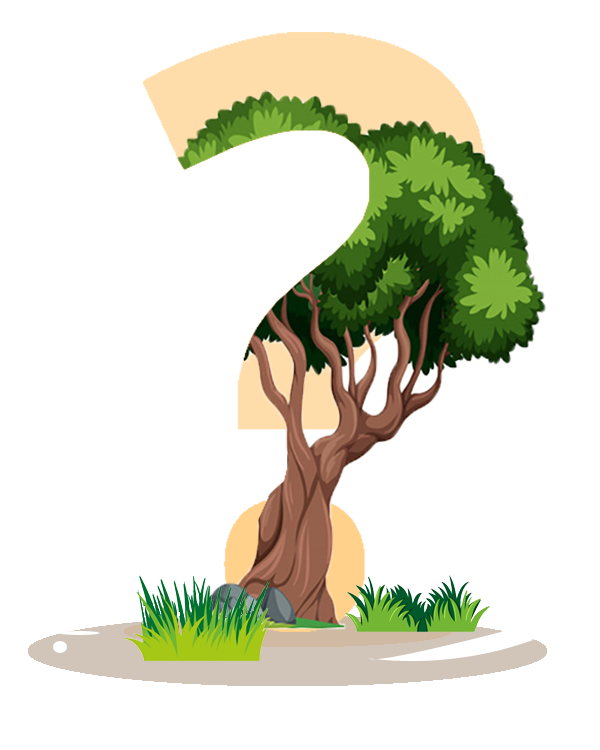

На сегодняшний день на долю сельскохозяйственных угодий приходится более трети земной поверхности суши. Это важнейшие экосистемы, обеспечивающие жизнедеятельность человека. Значительная часть данных территорий покрыта деревьями. Такие экосистемы, преобразованные благодаря многим столетиям изобретательной трудовой деятельности, стали настоящим культурным наследием, защита которого целесообразна как с духовной, так и с экономической точек зрения. Тем не менее, наше обращение со многими сельскохозяйственными угодьями истощает их жизнеспособность. Поэтому, необходимо исследовать его причины, касающиеся экосистемы.
К уязвимым в экологическом отношении странам относится Казахстан и, в частности, Кызылординская область. Это обусловлено ее географическими, пространственно-временными и социально-экономическими особенностями.
В Кызылординской области рост среднегодовых температур составил 0,27…0,32 ºС/10 лет и это является проблемой, вызванной глобальным потеплением и изменением климата. По словам главного пчеловода хозяйства Зайнеддин Убашев, в прошлом году в это время были частые дожди, в этом — стоит жара. Пчелы не весь день летают, а утром часов до 9 и потом вечером. Пчелы из-за сильной жары обжигают крылья и погибают.
Пчелиный дом – это искусственное гнездовое сооружение, которое пчелы-каменщики и другие одиночные пчелы могут использовать для откладывания яиц. В идеале пчелиный домик обеспечивает безопасное пространство вдали от хищников, погоды и химикатов, которые могут мешать развитию успешный репродуктивный цикл.
Посадите у себя во дворе как можно больше цветов местные растения, как правило, легче вырастают, так как они подходят к этому конкретному климату. Также пчелы родом из этой области существуют для опыления этих растении, именно поэтому местные растения обеспечивают им хорошее питание Оставьте миску с водой, чтобы пчелы могли пить из нее добавление веток, камней или грязи в воду дает пчелам что-то для приземления без риска упасть в воду Избегайте использования пестицидов в собственном саду пчелы существуют в городских условиях, поэтому корм, который они находят в наших дворах, имеет решающее значение для их питания. Растения, которые обрабатываются пестицидами, чрезвычайно вредны для пчел Попробуйте построить пчелиный дом в вашем саду одна из причин, по которой популяция пчел сокращается это их потеря среды обитания, поэтому пчелиные дома помогут в восстановлении популяции старайтесь покупать мед у местных пчеловодов производство меда в целом не влияет негативно на пчел, но старайтесь не поддерживать большие компании, которые мало заботятся о состоянии своих пчел и их популяции придерживаясь этих простых правил, вместе мы спасем пчел
Синтетические пестициды, удобрения, гербициды и особенно неоникотиноиды (следы которых все еще встречаются на европейских полях, несмотря на запрет 18), вредны для пчел, поскольку они влияют на центральную нервную систему, вызывая паралич и смерть. Пожалуйста, не обрабатывайте свой уголок природы синтетическими продуктами. Отдавайте предпочтение органическим продуктам и натуральным растворам, таким как компост. Затем используйте полезных насекомых, отпугивающих паразитов, например божьих коровок и богомолов.
Покупка органического меда и других продуктов у пчеловода в вашем районе - отличный способ поддержать деятельность, приносящую пользу местному сообществу. Кроме того, вы проявите интерес к пчеловоду, который будет заниматься экологически чистым пчеловодством.
Этот совет может показаться не в фокусе обсуждения, но на самом деле он очень важен. Покупая экологически чистые фрукты и овощи, вы избежите финансирования промышленного сельского хозяйства, в котором используются синтетические химические вещества и пестициды, которые повреждают почву и убивают насекомых-опылителей. Если он местный и сезонный, то вы обязательно помогли нашим друзьям-пчелам в поисках пыльцы и нектара, чтобы прокормить себя. И поддержали тех, кто стремится производить нашу пищу с вниманием и заботой об окружающей среде.
Есть не только медоносные пчелы, но и многие другие одиночные виды пчел, которые не менее важны для опыления. Эти одиночные пчелы не живут колониями, а гнездятся в небольших пространствах, таких как полые стебли или отверстия в древесине. С вырубкой лесов и, как следствие, потерей среды обитания, эти маленькие насекомые изо всех сил пытаются найти место для строительства «дома». Вот почему постройте один вместо них, чтобы разместить их в своем саду, огороде, дворе или на балконе. Все, что вам нужно сделать, это создать деревянную раму и вставить в нее кусочки дерева, в которые вы проделали отверстия, чередуя маленькие веточки и / или бамбуковые трости.
Знаете ли вы, что пчелы берут большую часть нектара с деревьев? Когда дерево цветет, оно дает сотни, если не тысячи, цветов, которыми можно питаться. Деревья - не только отличный источник пищи для пчел, но и важная среда обитания. Листья деревьев и смола служат материалом для гнездования пчел, в то время как естественные полости дерева служат отличным укрытием. Если у вас немного больше места, вы можете бороться с вырубкой лесов и укрепить среду обитания пчел, посадив фруктовые деревья, которые обеспечат им нектар и место, где можно укрыться.
Немного пренебрегайте своим садом! Я знаю, что это не похоже на хороший совет, но постарайтесь оставить какой-нибудь уголок сада немного взлохмаченным. Разнообразие цветов и высокая трава порадуют пчел.
Ну да, даже пчелы хотят пить. Чтобы вернуть их к неутомимой работе по опылению, наполните неглубокую миску чистой водой и поместите внутрь гальку и камни, чтобы они оторвались от поверхности воды. Пчелы приземлятся на камни, сделав несколько долгих освежающих глотков воды. Пчелы любят делиться информацией, поэтому, если вы будете поддерживать постоянный источник воды, местные опылители будут приходить к вам в гости.